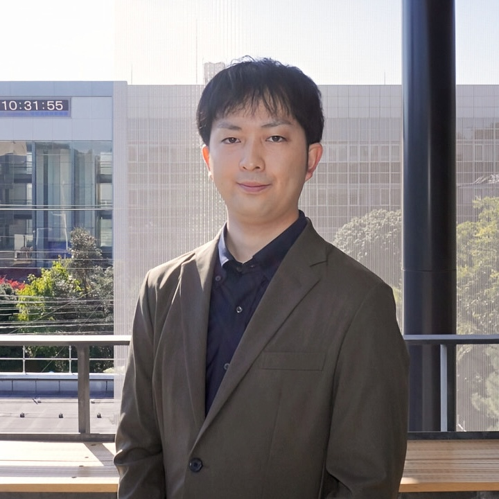

I am a senior researcher at the National Institute of Information and Communications Technology (NICT).
I received my Doctor of Engineering from Aoyama Gakuin University in 2021 under the supervision of Prof. Kazuhiko Sumi. I was an assistant professor at Aoyama Gakuin University from 2021 to 2023. My research interests include computer vision, machine learning, and robotics.
佐藤 立弥, 山崎 禎晃, 伊東 聖矢, 大原 剛三.
ユーザ指向とアイテム指向のメタ学習モデルの統合によるコールドスタート問題の緩和
日本データベース学会和文論文誌, 2026 (in Japanese).
(Mitigating the Cold-Start Problem by Integrating User-Oriented and Item-Oriented Meta-Learning Models)
[Paper]
Tomoaki Yamazaki, Seiya Ito, Kouzou Ohara.
Evaluation of Sense Embeddings with Optimized Vector-Meaning Correspondence
IEICE Transactions on Information and Systems, 2025.
[Paper]
Wisan Dhammatorn, Seiya Ito, Naoshi Kaneko, Kazuhiko Sumi.
Combining Instance Segmentation and Background Subtraction Models for Small Object Detection
International Journal of Automation Technology, 2025.
[Paper]
村上 紀超, 山崎 禎晃, 伊東 聖矢, 大原 剛三.
画像分類における誤分類リスクを考慮した敵対的学習
精密工学会誌, 2025 (in Japanese).
(Adversarial Training with Misclassification Risk in Image Classification)
[Paper]
村田 健悟, 伊東 聖矢, 大原 剛三.
表現空間における分類複雑性の評価に基づく継続学習分析手法の提案
人工知能学会論文誌, 2024 (in Japanese).
(A Novel Analytical Method Based on Classification Complexity in Representation Spaces for Continual Learning)
[Paper]
山下 大樹, 村田 健悟, 伊東 聖矢, 大原 剛三.
使用食材の典型度に頑健な料理画像からのカテゴリと食材の同時推定
精密工学会誌, 2023 (in Japanese).
(Category and Ingredients Estimation From Food Image Robust to Typicality of Used Ingredients)
[Paper]
伊東 聖矢, 金子 直史, 鷲見 和彦.
自己教師あり学習を用いた多眼ステレオ
精密工学会誌, 2020 (in Japanese).
(Self-Supervised Learning for Multi-View Stereo)
[Paper]
Seiya Ito, Naoshi Kaneko, Kazuhiko Sumi.
Latent 3D Volume for Joint Depth Estimation and Semantic Segmentation from a Single Image
Sensors, 2020.
[Paper]
Junji Takahashi, Masato Kawabe, Seiya Ito, Naoshi Kaneko, Wataro Takahashi, Toshiki Sakamoto, Akihiro Shibata, Yong Yu.
Image-retrieval Method Using Gradient Dilation Images for Cloud-based Positioning System with 3D Wireframe Map
Sensors and Materials, 2020.
[Paper]
釜田 祐哉, 伊東 聖矢, 金子 直史, 鷲見 和彦.
食品チラシ画像を用いたレシピ推薦システム
精密工学会誌, 2019 (in Japanese).
(Automatic Recipe Recommendation from Food Flyers)
[Paper][Project Page]
Tomoya Kaneko, Junji Takahashi, Seiya Ito, Yoshito Tobe.
A Hybrid Map with Permanent 3D Wireframes and Temporal Line Segments toward Long-term Visual Localization
SICE Journal of Control, Measurement, and System Integration (Special Issue on Fundamentals and Applications of Smart Sensing), 2019.
[Paper]
金子 直史, 伊東 聖矢, 鷲見 和彦.
ClothesAwarePoseNet: 衣服の領域分割を考慮した人物姿勢推定法
電子情報通信学会論文誌 D (画像の認識・理解特集号), 2018 (in Japanese).
(ClothesAwarePoseNet: Two-Stream Convolutional Networks for Clothing-Aware Human Pose Estimation)
[Paper]
Seiya Ito, Naoshi Kaneko, Takeshi Yoshida, and Kazuhiko Sumi.
Detection of Defective Regions in 3D Reconstruction to Support Image Acquisition
SICE Journal of Control, Measurement, and System Integretion (Special Issue on Smart Sensing), 2017.
[Paper]
Yusho Miyashita, Kazuhiko Sumi, Seiya Ito.
Towards Automatic Open-Vocabulary 3D Semantic Mapping via Vocabulary-Expanded Query Generation
2026 IEEE/RSJ International Conference on Intelligent Robots and Systems (IROS 2026), 2026.
[Paper][Project Page]
Shogo Ishii, Tomoaki Yamazaki, Kengo Murata, Seiya Ito, Kouzou Ohara.
Early-Retry Regeneration Framework for Improving Object-Sufficiency in Text-to-Image Generation
The 21st International Conference on Computer Vision Theory and Applications (VISAPP 2026), 2026.
[Paper]
Yuta Irisawa, Tomoaki Yamazaki, Seiya Ito, Shuhei Kurita, Ryota Akasaka, Masaki Onishi, Kouzou Ohara, Ken Sakurada.
Low-Latency Privacy-Aware Robot Behavior guided by Automatically Generated Text Datasets
2025 IEEE/RSJ International Conference on Intelligent Robots and Systems (IROS 2025), 2025.
[Paper][Project Page]
Keisuke Yamashita, Seiya Ito, Tomoaki Yamazaki, Kouzou Ohara.
Scene Recognition Meets Knowledge Graphs: Enhancing Rubustness to Object Diversity
The 19th International Conference on Machine Vision Application (MVA 2025), 2025.
[Paper]
Yuta Irisawa, Seiya Ito, Tomoaki Yamazaki, Ken Sakurada, Ryuhei Hamaguchi, Masaki Onishi, Kouzou Ohara.
Viewpoint-Aware 3D Dense Captioning
The 19th International Conference on Machine Vision Application (MVA 2025), 2025.
[Paper]
Kakeru Ohkuchi, Tomoaki Yamazaki, Seiya Ito, Kouzou Ohara.
Exploiting Class Vulnerabilities: Targeted Mislabeling Attack in Object Detection
The 16th International Conference on Quality Control by Artificial Vision (QCAV 2025), 2025.
[Paper]
Tomoaki Yamazaki, Seiya Ito, Kouzou Ohara.
Tailoring Ranking-based Losses to Capture Superior-Subordinate Relationships for Hierarchical Image Classification
The 30th International Workshop on Frontiers of Computer Vision (IW-FCV 2024), 2024.
Mami Kikuchi, Seiya Ito, Naoshi Kaneko, Kazuhiko Sumi.
Learning Part Primitive Degrees for Hierarchical 3D Object Partitioning
The 30th International Workshop on Frontiers of Computer Vision (IW-FCV 2024), 2024.
Qin-yuan Zhou, Seiya Ito, Kazuhiko Sumi.
A Benchmark for 3D Reconstruction with Semantic Completion in Dynamic Environments
The 30th International Workshop on Frontiers of Computer Vision (IW-FCV 2024), 2024.
[Paper][Code]
Dhammatorn Wisan, Naoshi Kaneko, Seiya Ito, Kazuhiko Sumi.
Background-aware Two-Stream Network for Moving Object Detection
The 30th International Workshop on Frontiers of Computer Vision (IW-FCV 2024), 2024.
Yusho Miyashita, Seiya Ito, Kazuhiko Sumi.
Speeding Up Semantic Scene Completion: A Completion by Region Proposal Approach
The 30th International Workshop on Frontiers of Computer Vision (IW-FCV 2024), 2024.
Mami Kikuchi, Seiya Ito, Naoshi Kaneko, Kazuhiko Sumi.
Part-Level Single-View 3D Shape Reconstruction with Multiple Types of Primitives
The 16th International Conference on Quality Control by Artificial Vision (QCAV 2023), 2023.
[Paper]
Dhammatorn Wisan, Naoshi Kaneko, Seiya Ito, Kazuhiko Sumi.
Two-stream Network for Moving Object Detection
The 29th International Workshop on Frontiers of Computer Vision (IW-FCV 2023), 2023.
Tomoaki Yamazaki*, Seiya Ito*, Kouzou Ohara (* equal contribution).
Hierarchical Image Classification with Conceptual Hierarchies Generated via Lexical Databases
The 29th International Workshop on Frontiers of Computer Vision (IW-FCV 2023), 2023.
Kengo Murata, Seiya Ito, Kouzou Ohara.
Learning and Transforming General Representations to Break Down Stability-Plasticity Dilemma
The 16th Asian Conference of Computer Vision (ACCV 2022), 2022.
[Paper]
Hiroki Kojima, Naoshi Kaneko, Seiya Ito, Kazuhiko Sumi.
Multimodal Pseudo-Labeling Under Various Shooting Conditions: Case Study on RGB and IR Images
The 28th International Workshop on Frontiers of Computer Vision (IW-FCV 2022), 2022.
[Paper]
Seiya Ito, Naoshi Kaneko, Kazuhiko Sumi.
Dense Panoptic Mapping from RGB-D Sequences in Dynamic Scenes
The 28th International Workshop on Frontiers of Computer Vision (IW-FCV 2022), 2022.
Seiya Ito, Byeongjun Ju, Naoshi Kaneko, Kazuhiko Sumi.
Viewpoint-independent Single-view 3D Object Reconstruction using Reinforcement Learning
The 17th International Conference on Computer Vision Theory and Applications (VISAPP 2022), 2022.
[Paper]
Seiya Ito, Naoshi Kaneko, Kazuhiko Sumi.
Seeing Farther Than Supervision: Self-supervised Depth Completion in Challenging Environments
The 17th International Conference on Machine Vision Applications (MVA 2021), 2021.
[Paper][Code (Not published due to license issues)]
Taku Fujitomi, Seiya Ito, Naoshi Kaneko, Kazuhiko Sumi.
Bi-directional Recurrent MVSNet for High-resolution Multi-view Stereo
The 17th International Conference on Machine Vision Applications (MVA 2021), 2021.
[Paper]
Takafumi Nagi, Naoshi Kaneko, Seiya Ito, Kazuhiko Sumi.
Automatic Dataset Collection for Speech-Driven Gesture Generation
The 15th International Conference on Quality Control by Artificial Vision (QCAV 2021), 2021.
[Paper]
Gakuto Murayama, Naoshi Kaneko, Seiya Ito, Kazuhiko Sumi.
Reducing Depth Ambiguity in 3D Human Pose and Body Shape Estimation
The 15th International Conference on Quality Control by Artificial Vision (QCAV 2021), 2021.
[Paper]
Hiroki Kojima, Naoshi Kaneko, Seiya Ito, Kazuhiko Sumi.
You Don't Drink a Cupboard: Improving Egocentric Action Recognition with Co-Occurrence of Verbs and Nouns
The 15th International Conference on Quality Control by Artificial Vision (QCAV 2021), 2021.
[Paper]
Naoshi Kaneko, Mei Oyamay, Masaki Hayashiz, Seiya Ito, Kazuhiko Sumi.
Feature Bridging Networks for 3D Human BodyShape Estimation from a Single Depth Map
The 4th International Conference on Imaging, Vision & Pattern Recognition (IVPR 2020), 2020.
[Paper]
Ryo Tamura, Seiya Ito, Naoshi Kaneko, Kazuhiko Sumi.
Towards Detailed 3D Modeling: Mesh Super-Resolution via Deformation
The 4th International Conference on Imaging, Vision & Pattern Recognition (IVPR 2020), 2020.
[Paper]
Yusuke Nakasato, Seiya Ito, Naoshi Kaneko, Kazuhiko Sumi.
Complex Nonlinear and Grid-Sampling Harmonic Convolution for Rotation Equivariant Image Recognition
International Workshop on Frontiers of Computer Vision (IW-FCV 2020), 2020.
Kazunari Takagi, Seiya Ito, Naoshi Kaneko, Kazuhiko Sumi.
Boosting Monocular Depth Estimation with Channel Attention and Mutual Learning
The 3rd International Conference on Imaging, Vision & Pattern Recognition (IVPR), 2019.
[Paper][Code]
Natsuki Hase, Seiya Ito, Naoshi Kaneko, Kazuhiko Sumi.
Data Augmentation for Intra-Class Imbalance with Generative Adversarial Network
Quality Control by Artificial Vision (QCAV 2019), 2019.
[Paper]
Nobuhiro Suga, Seiya Ito, Naoshi Kaneko, Kazuhiko Sumi.
Multiple Human Tracking with Dual Cost Graphs
Quality Control by Artificial Vision (QCAV), 2019.
[Paper]
Masato Fukuzaki, Seiya Ito, Naoshi Kaneko, Kazuhiko Sumi.
Robot Grasp Planning with Integration Map of Graspability and Object Occupancy
International Workshop on Frontiers of Computer Vision (IW-FCV), 2019.
[Paper]
Kaho Yamada, Seiya Ito, Naoshi Kaneko, Kazuhiko Sumi.
Human Action Recognition via Body Part Region Segmented Dense Trajectories
ACCV 2018 Workshop on Attention/Intention Understanding, 2018.
[Paper]
Seiya Ito*, Naoshi Kaneko*, Yuma Shinohara, Kazuhiko Sumi (* equal contribution).
Deep Modular Network Architecture for Depth Estimation from Single Indoor Images
ECCV 2018 Workshop on 3D Reconstruction in the Wild, 2018.
[Paper]
Seiya Ito, Naoshi Kaneko, Junji Takahashi, and Kazuhiko Sumi.
Global Localization from a Single Image in Known Indoor Environments
The 7th International Conference on Informatics, Electronics & Vision (ICIEV), 2018.
[Paper]